Page No. 101.
What are these numbers in Step 3 and Step 4? Ans:
Step 3: No. of matchsticks placed horizontally-3 No. of matchsticks placed diagonally-4
Step 4: No. of matchsticks placed horizontally-4 No. of matchsticks placed diagonally-5
How does the number of matchsticks change in each orientation as the steps increase? Write an expression for the number of matchsticks at Step ‘y’ in each orientation. Do the two expressions
add up to \(2y + 1\)?
Ans:
For horizontal placement: 1, 2, 3, 4, … At the yth step, the number of horizontal matchsticks \(= y\). For diagonal placement: 2, 3, 4, 5, … At the yth step, the number of diagonal matchsticks \(= y + 1\). Yes.
Page No. 102.

- 1.One plate of Jowar roti costs ₹30 and one plate of Pulao costs ₹20. If x
plates of Jowar roti and y plates of pulao were ordered in a day, which expression(s) describe the total amount in rupees earned that day?

- 2.Pushpita sells two types of flowers on Independence Day: champak and
marigold. ‘p’ customers only bought champak, ‘q’ customers only bought marigold, and ‘r’ customers bought both. On the same day, she gave away a tiny national flag to every customer. How many flags did she give away that day? )

- 3.A snail is trying to climb along the wall of a deep well. During the day it
climbs up ‘u’ cm and during the night it slowly slips down ‘d’ cm. This happens for 10 days and 10 nights.
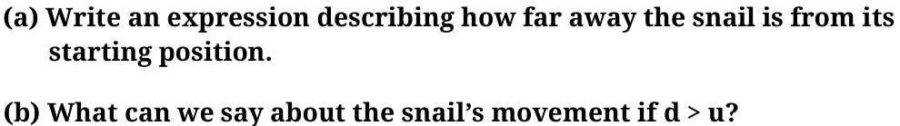
Ans:
- (a)10 (u - d) cm
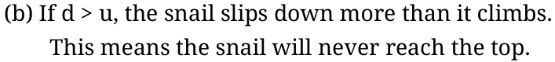
- 4.Radha is preparing for a cycling race and practices daily. The first week
she cycles 5 km every day. Every week she increases the daily distance cycled by ‘z’ km. How many kilometers would Radha have cycled after 3 weeks?
Ans: \(105 + 21z\) km
- 5.In the following figure, observe how the expression \(w + 2\) becomes \(4w +\)
20 along one path. Fill in the missing blanks on the remaining paths. The ovals contain expressions and the boxes contain operations.
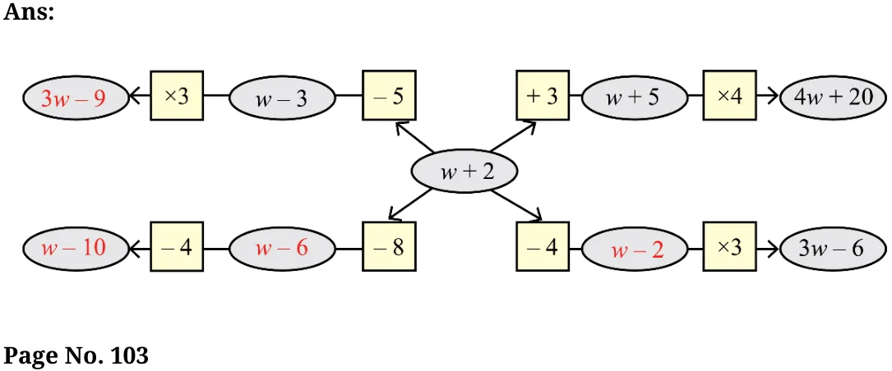
- 6.A local train from Yahapur to Vahapur stops at three stations at equal
distances along the way. The time taken in minutes to travel from one station to the next station is the same and is denoted by t. The train stops for 2 minutes at each of the three stations. (a) If \(t = 4\), what is the
time taken to travel from Yahapur to Vahapur? (b) What is the algebraic expression for the time taken to travel from Yahapur to Vahapur? [Hint: Draw a rough diagram to visualise the situation]
Ans:
- (a)22 minutes
- (b)The algebraic expression for the time taken to travel from Yahapur to
Vahapur \(= 4t + 6\) minutes.
- 7.Simplify the following expressions:
- (a)\(3a + 9b - 6 + 8a - 4b - 7a + 16\)
- (b)\(3 (3a - 3b) - 8a - 4b - 16\)
- (c)\(2 (2x - 3) + 8x + 12\)
- (d)\(8x - (2x - 3) + 12\)
- (e)\(8h - (5 + 7h) + 9\)
- (f)\(23 + 4 (6m - 3n) - 8n - 3m - 18\)
Ans:
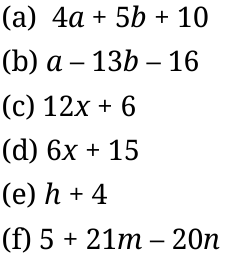
- 8.Add the expressions given below:
- (a)\(4d - 7c + 9\) and \(8c - 11 + 9d\)
- (b)\(- 6f + 19 - 8s\) and \(- 23 + 13f + 12s\)
- (c)\(8d - 14c + 9\) and \(16c - (11 + 9d)\)
- (d)\(6f - 20 + 8s\) and \(23 - 13f - 12s\)
- (e)\(13m - 12n\) and \(12n - 13m\)
- (f)\(- 26m + 24n\) and \(26m - 24n\)
Ans:
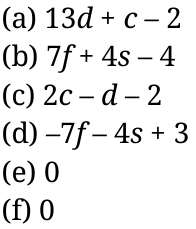
- 9.Subtract the expressions given below:
- (a)\(9a - 6b + 14\) from \(6a + 9b - 18\)
- (b)\(- 15x + 13 - 9y\) from \(7y - 10 + 3x\)
- (c)\(17g + 9 - 7h\) from \(11 - 10g + 3h\)
- (d)\(9a - 6b + 14\) from \(6a - (9b + 18)\)
- (e)\(10x + 2 + 10y\) from \(- 3y +8 - 3x\)
- (f)\(8g + 4h - 10\) from \(7h - 8g + 20\)
Ans:
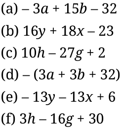
10.Describe situations corresponding to the following algebraic expressions: Ans:
- (a)\(8x + 3y\)
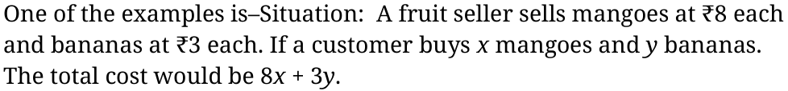
- (b)\(15x - 2x\)
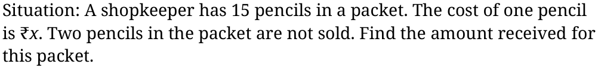
11.Imagine a straight rope. If it is cut once as shown in the picture, we get 2 pieces. If the rope is folded once and then cut as shown, we get 3 pieces. Observe the pattern and find the number of pieces if the rope is folded 10 times and cut. What is the expression for the number of pieces when the rope is folded r times and cut?
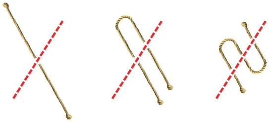
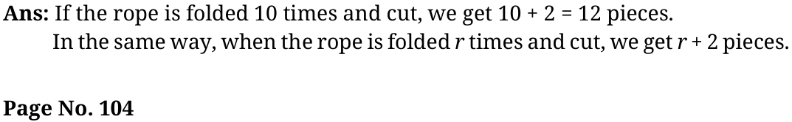
12.Look at the matchstick pattern below. Observe and identify the pattern. How many matchsticks are required to make 10 such squares? How many are required to make w squares?
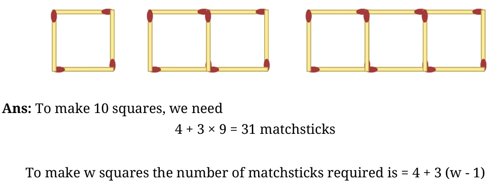
13.Have you noticed how the colours change in a traffic signal? The sequence of colour changes is shown below. Find the colour at positions 90, 190, and 343. Write expressions to describe the positions for each colour.
Ans: For Position 90: \(\frac{𝟗𝟎}{𝟒}\) The colour is Yellow.
For Position 190: \(\frac{𝟏𝟗𝟎}{𝟒}\) The colour is Yellow
For Position 343: \(\frac{𝟑𝟒𝟑}{𝟒}\) The colour is Green
Expressions: In general, \(4n - 3\) positions for red light, \(4n - 1\) position for green light and 2n position for yellow light.
14.Observe the pattern below. How many squares will be there in Step 4, Step 10, Step 50? Write a general formula. How would the formula change if we want to count the number of vertices of all the squares?
Ans: No. of Squares in Step \(4 = 17\) No. of Squares in Step \(10 = 41\) No. of Squares in Step \(50 = 201\) So, general formula \(= 5 +\) (n \(- 1) \times 4 = 4n + 1\)
No. of vertices \(= 16n + 4\).
Page No. 105
15.Numbers are written in a particular sequence in this endless \(4 -\) column grid.
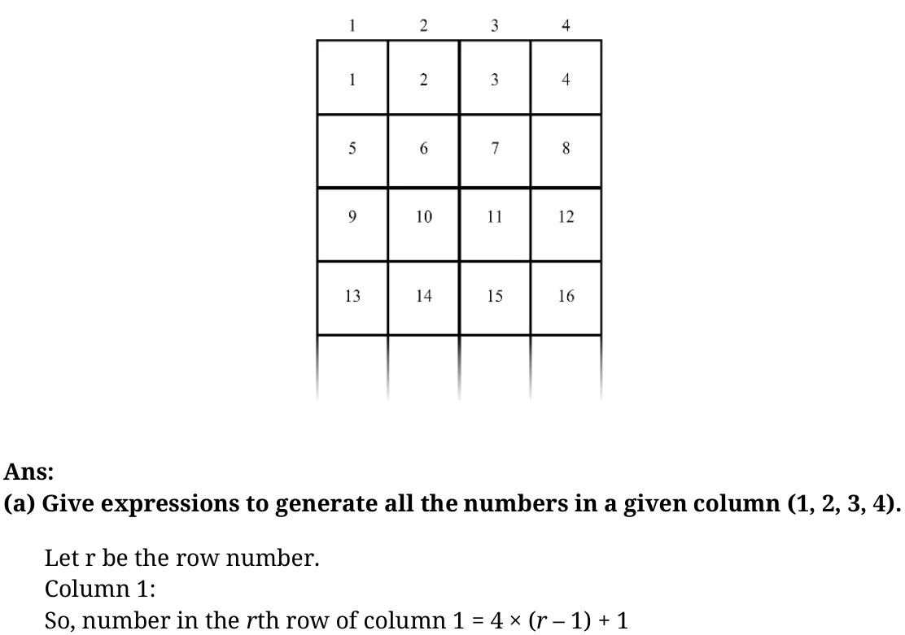
Column 2: \(4 \times\) (r \(- 1) + 2\) Column 3: \(4 \times\) (r \(- 1) + 3\) Column 4: \(4 \times\) (r \(- 1) + 4\)
If c is the column number, then the general formula to generate all numbers \(is= 4 \times\) (r \(- 1) + c\)
- (b)In which row and column will the following numbers appear:
- (i)124 (ii) 147 (iii) 201
- (i)We divide each number by 4 to find its row and column
\(124 \div 4\) So, Quotient \(= 31\) and remainder is 0
\(\therefore 124 = 4 \times 31 + 0\) or \(4 \times 30 + 4\)
Comparing it with \(4 \times\) (r \(- 1) + c\), we get
\(r - 1 = 30\), \(c = 4\) So, \(r = 31\) and \(c = 4\)
- (ii)147 will appear at row 37 and column 3
- (iii)201 will appear at row 51 and column 1.
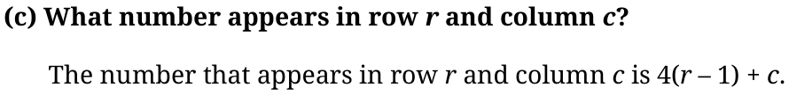
- (d)Observe the positions of multiples of 3.
The pattern in the columns in which multiples of 3 appear, follow a repeating sequence of column number: 3, 2, 1, 4, 3, 2, 1, ... as shown.
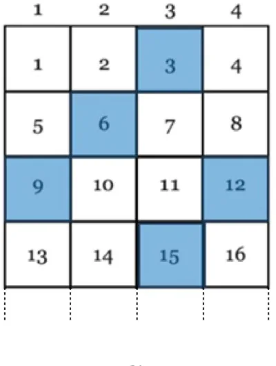
Do you see any pattern in it? List other patterns that you see.
- 1.All numbers in Column 4 are multiples of 4.
- 2.Even numbers always appear in column 2 and column 4.
- 3.Odd numbers always appear in column 1 and column 3.
Find some more!